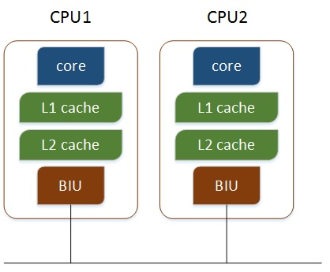
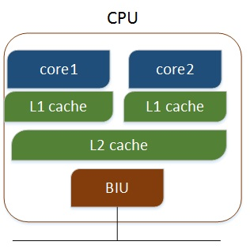
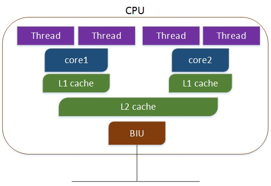

计算机从单任务到多任务的发展也是对应的CPU的处理能力。现在的系统基本都是多核的系统并有着更高的系统吞吐能力。
平常只是脑海中有这些概念，并没有通过某些方法去论证这些东西。
在linux上面我们所有CPU相关的信息可以在/proc/cpuinfo文件里面可以看到，我们可以看到以下信息:
|
|
以上各信息有如下关系:
|
|
从上面执行的结果来看，证明我使用的cpu有2 * 6 = 12核，每个核有2个超线程，所以有24个逻辑cpu。
我们来看各CPU的架构
多个物理CPU，CPU通过总线进行通信，效率比较低，如下：

多核CPU，不同的核通过L2 cache进行通信，存储和外设通过总线与CPU通信，如下：*

多核超线程,每个核有两个逻辑的处理单元，两个核共同分享一个核的资源，如下：
